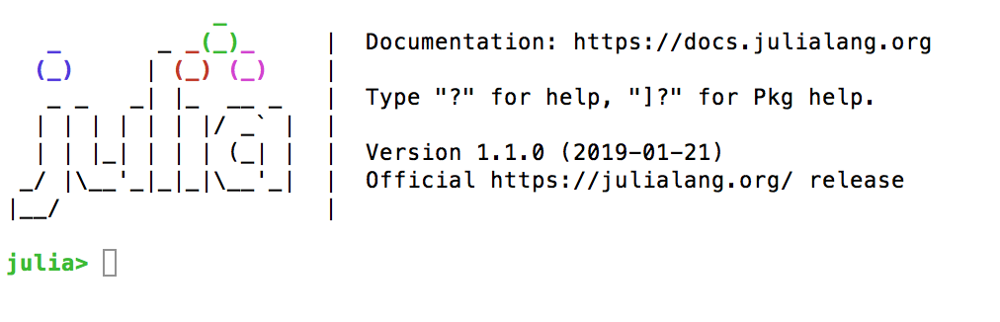

Présentation#
Hello tout le monde !
Je me présente, je suis ingénieur à l’Institut de Recherche
Mathématiques de Rennes. J’ai une formation en mécanique des fluides.
J’ai écrit beaucoup de codes en Fortran avec MPI et
OpenMP et pendant une dizaine d’années j’ai fait beaucoup de Python.
J’ai commencé à apprendre le langage Julia en juillet 2018 avec la première version stable.
Les supports que je vais utiliser ont été écrits à l’origine par Thierry Clopeau.
Julia est un langage de programmation de haut niveau dédié au calcul scientifique et calcul haute performance. C’est un logiciel libre sous licence MIT.
Julia se veut la combinaison de :
la facilité de développement des environnements interprétés comme R, MATLAB ou PYTHON+NUMPY …
la performance d’un langage compilé, permettant une exécution parallèle et/ou distribuée C/C++ ou Fortran…
Julia est jeune à l’échelle de l’âge des langages. On peut voir son activité de développement sur GitHub, avec naissance en aôut 2009. La première version stable 1.0 est sortie en juillet 2018 durant la conférence JuliaCon à Londres. Les créateurs sont Jeff Bezanson, Stefan Karpinski, Viral B. Shah et Alan Edelman.
Ce langage possède déjà un grand nombre d’atouts :
des fonctions mathématiques de précision numérique étendue (
Int128,Float64…).de nombreuses bibliothèques (ou packages) dont beaucoup sont écrites en Julia http://pkg.julialang.org/.
l’intégration naturelle de très nombreuses bibliothèques en C, Fortran, Python…
Mais surtout l’usage d’un compilateur à la volée (Just In Time) !
Les quelques pages qui suivent vont - nous l’espérons - vous guider dans l’usage de Julia il est possible également de consulter :
Le site officiel http://julialang.org/ avec une documentation très complète.
http://en.wikibooks.org/wiki/Introducing_Julia excellent et très complet guide de Julia.
https://zestedesavoir.com/articles/141/a-la-decouverte-de-julia/ très bon article à lire absolument !
http://bioinfo-fr.net/julia-le-successeur-de-r un exemple en bioinfo.
https://juliadocs.github.io/Julia-Cheat-Sheet/fr/ Aide-mémoire
Si vous souhaitez suivre l’actualité du langage, inscrivez-vous sur la liste Julia du CNRS. Vous recevrez les nouvelles Julia et tous les évènements liés au langage.
Installation et accessibilité#
Le terminal#
Julia est disponible sous tout OS (Mac-linux et Windows) voici la page de téléchargement officielle http://julialang.org/downloads/ Vous pouvez utiliser des installations plus spécifiques comme sous linux avec jill ou MacOS avec brew.
Je conseille vivement d’utiliser juliaup qui est un outil multi plateforme qui vous permet d’avoir une version de Julia qui fonctionne bien et possède des fonctionnalités intéressantes pour aller plus loin.
Une fois installé une interface brut de pomme apparait, en fait, une simple console ou REPL pour Read/Evaluate/Print/Loop :

Le prompt julia> invitant la commande…
Dans la console de Julia on retrouve l’usage classique d’un terminal avec
“flèche vers le haut” pour rappeler une commande précédente.
“Tab” la tabulation qui complète ou propose la fin d’un mot.
Des commandes
pwd()(affiche le répertoire courant)cd()(Change directory),homedir()(pointe sur le home directory)…l’usage de
;dans la console fait changer le prompt en et donne directement accès aux commande shell (unix…).L’aide peut être invoquée avec
help(“sin”)ou?sinle prompt se transformant de nouveau .
Usage#
Un programme Julia est un script extension .jl on peut soit l’exécuter en ligne de commande “julia nomfichier.jl” ou en l’incluant
filter(endswith("jl"), readdir())
1-element Vector{String}:
"monfichier.jl"
pwd()
"/home/pnavaro/Julia_Introduction"
println(String(read("monfichier.jl")))
function helloworld()
return "Hello World!"
end
println(helloworld())
println("Le fichier s'appelle $(@__FILE__)")
println("Il est dans le répertoire $(@__DIR__)")
f(x, y) = 3x + 2
println(f(4,5))
include("monfichier.jl")
Hello World!
Le fichier s'appelle /Users/navaro/JuliaProjects/Julia_Introduction/monfichier.jl
Il est dans le répertoire /Users/navaro/JuliaProjects/Julia_Introduction
14
Toute ligne ou fin de ligne commançant par # est en commentaire, une bloc est délimité par #= et =#:
# commentaire
1+2 #commentaire en fin de ligne
3
#= un bloc
complet
de commentaires =#
Editeur à coloration syntaxique#
Il est parfaitement possible de travailler à l’aide d’un éditeur de texte et de la console en parallèle.
Il existe des fichier de configuration pour la coloration syntaxique dans les éditeurs :
Gedit
emacs
Notepadd++ (rechercher “julia syntaxe highlighting”)
Sublime Text 3
Atom
…
On les retrouve dans l’organisation JuliaEditorSupport. Certains offrent la possibilité de gérer un terminal, les graphiques et un debugger dans la même fenêtre.
Environnement intégré (IDE)#
Il n’y a plus actuellement d’interface Julia Studio (équivalent de Rstudio)…
Néanmoins certains éditeurs offrent des extensions qui “intègrent” Julia
Sublime Text 3 et l’extension Sublime-IJulia
Atom et l’extension JunoLab
Depuis 2020 l’IDE préconisé par les développeurs de Julia est Visual Studio Code. Il faut installer l’extension Julia et sur votre clavier Alt-J+O devrait ouvrir une console Julia dans votre éditeur. En cas de souci il faut lire consulter ce site.
Notebook#
Le notebook est la façon de programmer qui permet d’obtenir plus directement un rendu plus web-publiable. La plateforme Jupyter qui héberge les notebooks, offre des possibilités d’interaction supplémentaire avec l’utilisation de widgets…
On peut installer sur sa propre machine une instance de Jupyter (ex iPython) permettant de travailler dans son navigateur. Pour cela il faut installer le package IJulia dans le terminal (REPL) taper “]” :
(v1.1) pkg> add IJulia
using IJulia
notebook()
On peut aussi convertir un fichier notebook (extension .ipynb) en fichier .jl (ou autre):
Dans l’interface Jupyter faire :
File->Download asDans un terminal :
ipython nbconvert --to script nomfichier.ipynb.
L’outil jupytext permet de synchroniser un notebook (.ipynb) avec un fichier au format markdown (.md) ou au format script (.jl). Intégré avec Jupyter, il permet d’ouvrir n’importe lequel de ces 3 formats.
Les packages Literate.jl et Weave.jl permettent de générer des notebooks, des fichiers markdown, html, doc, etc…
Vous pouvez également regarder sur côté de Pluto.jl qui permet de créer des notebooks Julia avec des fonctionalités améliorant l’interactivité.
Les Packages#
Julia possède une communauté très dynamique, à la fois pour développer le coeur du langage mais aussi pour mettre à disposition de nouvelles fonctionnalités qui pour certaines feront partie des prochaines versions de Julia.
Un listing complet des packages officiels est disponible sur juliapackages.com et/ou juliahub.com.
Pour installer un package faire “]”
(v1.1) pkg> add Plot
et il est installé physiquement dans votre espace disque (répertoire .julia/).
L’utilisation se fait en début de chaque programme (ou script par “using”). L’initialisation peut être assez longue à cause de la compilation. Depuis la version 0.4 les packages sont compilés (ou pré-compilés) à l’installation ou premier usage et stocké en fichier pour être rechargé plus rapidement ultérieurement.
Je conseille de faire une mise à jour régulière des packages installés. Le plus souvent possible car si le langage est stable, beaucoup de packages ne le sont pas.
(v1.1) pkg> up
import Pkg
Pkg.add("Plots")
Resolving package versions...
No Changes to `~/Julia_Introduction/Project.toml`
No Changes to `~/Julia_Introduction/Manifest.toml`
Pkg.status()
Status `~/Julia_Introduction/Project.toml`
[1520ce14] AbstractTrees v0.4.4
[6e4b80f9] BenchmarkTools v1.4.0
[a93c6f00] DataFrames v1.6.1
[7a1cc6ca] FFTW v1.7.2
[7073ff75] IJulia v1.24.2
[8b842266] PalmerPenguins v0.1.4
[f0f68f2c] PlotlyJS v0.18.11
[91a5bcdd] Plots v1.39.0
[c46f51b8] ProfileView v1.7.2
[92933f4c] ProgressMeter v1.9.0
[438e738f] PyCall v1.96.4
[d330b81b] PyPlot v2.11.2
[ce6b1742] RDatasets v0.7.7
[8dfed614] Test
La commande Pkg permet de gérer les actions faire “]”
(v1.1) pkg> rm NomDuPackage # rm : remove
(v1.1) pkg> update # comme dit le nom
(v1.1) pkg> precompile # pour forcer la compilation
On verra dans les sections suivantes l’utilisation de quelques packages plus prisés et même jusqu’à la création d’un package !
Vous pouvez utiliser un environnement local pour contôler les versions de vos packages avec la commande activate. Placez-vous dans le répertoire ou se trouve votre code:
mkpath("test")
cd("test")
pwd()
"/home/pnavaro/Julia_Introduction/test"
Pkg.activate(".")
Activating project at `~/Julia_Introduction/test`
Pkg.add("Test")
Resolving package versions...
Updating `~/Julia_Introduction/test/Project.toml`
[8dfed614] + Test
No Changes to `~/Julia_Introduction/test/Manifest.toml`
Deux fichiers ont été créés,
Project.toml qui contient les packages installés dans ce projet
Manifest.toml qui contient l’état complet de votre installation Julia. Ce fichier est géré par Julia et ne doit pas être édité.
Pour en savoir plus sur ces fichiers, vous pouvez consulter la documentation de Pkg.jl
println(String(read("Project.toml")))
[deps]
Plots = "91a5bcdd-55d7-5caf-9e0b-520d859cae80"
Test = "8dfed614-e22c-5e08-85e1-65c5234f0b40"
println(String(read("Manifest.toml")))
# This file is machine-generated - editing it directly is not advised
julia_version = "1.10.0"
manifest_format = "2.0"
project_hash = "1c9fba66420713b01381f621a386f3a4a9a64d74"
[[deps.ArgTools]]
uuid = "0dad84c5-d112-42e6-8d28-ef12dabb789f"
version = "1.1.1"
[[deps.Artifacts]]
uuid = "56f22d72-fd6d-98f1-02f0-08ddc0907c33"
[[deps.Base64]]
uuid = "2a0f44e3-6c83-55bd-87e4-b1978d98bd5f"
[[deps.BitFlags]]
git-tree-sha1 = "2dc09997850d68179b69dafb58ae806167a32b1b"
uuid = "d1d4a3ce-64b1-5f1a-9ba4-7e7e69966f35"
version = "0.1.8"
[[deps.Bzip2_jll]]
deps = ["Artifacts", "JLLWrappers", "Libdl", "Pkg"]
git-tree-sha1 = "9e2a6b69137e6969bab0152632dcb3bc108c8bdd"
uuid = "6e34b625-4abd-537c-b88f-471c36dfa7a0"
version = "1.0.8+1"
[[deps.Cairo_jll]]
deps = ["Artifacts", "Bzip2_jll", "CompilerSupportLibraries_jll", "Fontconfig_jll", "FreeType2_jll", "Glib_jll", "JLLWrappers", "LZO_jll", "Libdl", "Pixman_jll", "Pkg", "Xorg_libXext_jll", "Xorg_libXrender_jll", "Zlib_jll", "libpng_jll"]
git-tree-sha1 = "4b859a208b2397a7a623a03449e4636bdb17bcf2"
uuid = "83423d85-b0ee-5818-9007-b63ccbeb887a"
version = "1.16.1+1"
[[deps.CodecZlib]]
deps = ["TranscodingStreams", "Zlib_jll"]
git-tree-sha1 = "cd67fc487743b2f0fd4380d4cbd3a24660d0eec8"
uuid = "944b1d66-785c-5afd-91f1-9de20f533193"
version = "0.7.3"
[[deps.ColorSchemes]]
deps = ["ColorTypes", "ColorVectorSpace", "Colors", "FixedPointNumbers", "PrecompileTools", "Random"]
git-tree-sha1 = "67c1f244b991cad9b0aa4b7540fb758c2488b129"
uuid = "35d6a980-a343-548e-a6ea-1d62b119f2f4"
version = "3.24.0"
[[deps.ColorTypes]]
deps = ["FixedPointNumbers", "Random"]
git-tree-sha1 = "eb7f0f8307f71fac7c606984ea5fb2817275d6e4"
uuid = "3da002f7-5984-5a60-b8a6-cbb66c0b333f"
version = "0.11.4"
[[deps.ColorVectorSpace]]
deps = ["ColorTypes", "FixedPointNumbers", "LinearAlgebra", "Requires", "Statistics", "TensorCore"]
git-tree-sha1 = "a1f44953f2382ebb937d60dafbe2deea4bd23249"
uuid = "c3611d14-8923-5661-9e6a-0046d554d3a4"
version = "0.10.0"
[deps.ColorVectorSpace.extensions]
SpecialFunctionsExt = "SpecialFunctions"
[deps.ColorVectorSpace.weakdeps]
SpecialFunctions = "276daf66-3868-5448-9aa4-cd146d93841b"
[[deps.Colors]]
deps = ["ColorTypes", "FixedPointNumbers", "Reexport"]
git-tree-sha1 = "fc08e5930ee9a4e03f84bfb5211cb54e7769758a"
uuid = "5ae59095-9a9b-59fe-a467-6f913c188581"
version = "0.12.10"
[[deps.Compat]]
deps = ["TOML", "UUIDs"]
git-tree-sha1 = "75bd5b6fc5089df449b5d35fa501c846c9b6549b"
uuid = "34da2185-b29b-5c13-b0c7-acf172513d20"
version = "4.12.0"
weakdeps = ["Dates", "LinearAlgebra"]
[deps.Compat.extensions]
CompatLinearAlgebraExt = "LinearAlgebra"
[[deps.CompilerSupportLibraries_jll]]
deps = ["Artifacts", "Libdl"]
uuid = "e66e0078-7015-5450-92f7-15fbd957f2ae"
version = "1.0.5+1"
[[deps.ConcurrentUtilities]]
deps = ["Serialization", "Sockets"]
git-tree-sha1 = "8cfa272e8bdedfa88b6aefbbca7c19f1befac519"
uuid = "f0e56b4a-5159-44fe-b623-3e5288b988bb"
version = "2.3.0"
[[deps.Contour]]
git-tree-sha1 = "d05d9e7b7aedff4e5b51a029dced05cfb6125781"
uuid = "d38c429a-6771-53c6-b99e-75d170b6e991"
version = "0.6.2"
[[deps.DataAPI]]
git-tree-sha1 = "8da84edb865b0b5b0100c0666a9bc9a0b71c553c"
uuid = "9a962f9c-6df0-11e9-0e5d-c546b8b5ee8a"
version = "1.15.0"
[[deps.DataStructures]]
deps = ["Compat", "InteractiveUtils", "OrderedCollections"]
git-tree-sha1 = "ac67408d9ddf207de5cfa9a97e114352430f01ed"
uuid = "864edb3b-99cc-5e75-8d2d-829cb0a9cfe8"
version = "0.18.16"
[[deps.Dates]]
deps = ["Printf"]
uuid = "ade2ca70-3891-5945-98fb-dc099432e06a"
[[deps.DelimitedFiles]]
deps = ["Mmap"]
git-tree-sha1 = "9e2f36d3c96a820c678f2f1f1782582fcf685bae"
uuid = "8bb1440f-4735-579b-a4ab-409b98df4dab"
version = "1.9.1"
[[deps.DocStringExtensions]]
deps = ["LibGit2"]
git-tree-sha1 = "2fb1e02f2b635d0845df5d7c167fec4dd739b00d"
uuid = "ffbed154-4ef7-542d-bbb7-c09d3a79fcae"
version = "0.9.3"
[[deps.Downloads]]
deps = ["ArgTools", "FileWatching", "LibCURL", "NetworkOptions"]
uuid = "f43a241f-c20a-4ad4-852c-f6b1247861c6"
version = "1.6.0"
[[deps.EpollShim_jll]]
deps = ["Artifacts", "JLLWrappers", "Libdl"]
git-tree-sha1 = "8e9441ee83492030ace98f9789a654a6d0b1f643"
uuid = "2702e6a9-849d-5ed8-8c21-79e8b8f9ee43"
version = "0.0.20230411+0"
[[deps.ExceptionUnwrapping]]
deps = ["Test"]
git-tree-sha1 = "dcb08a0d93ec0b1cdc4af184b26b591e9695423a"
uuid = "460bff9d-24e4-43bc-9d9f-a8973cb893f4"
version = "0.1.10"
[[deps.Expat_jll]]
deps = ["Artifacts", "JLLWrappers", "Libdl"]
git-tree-sha1 = "4558ab818dcceaab612d1bb8c19cee87eda2b83c"
uuid = "2e619515-83b5-522b-bb60-26c02a35a201"
version = "2.5.0+0"
[[deps.FFMPEG]]
deps = ["FFMPEG_jll"]
git-tree-sha1 = "b57e3acbe22f8484b4b5ff66a7499717fe1a9cc8"
uuid = "c87230d0-a227-11e9-1b43-d7ebe4e7570a"
version = "0.4.1"
[[deps.FFMPEG_jll]]
deps = ["Artifacts", "Bzip2_jll", "FreeType2_jll", "FriBidi_jll", "JLLWrappers", "LAME_jll", "Libdl", "Ogg_jll", "OpenSSL_jll", "Opus_jll", "PCRE2_jll", "Zlib_jll", "libaom_jll", "libass_jll", "libfdk_aac_jll", "libvorbis_jll", "x264_jll", "x265_jll"]
git-tree-sha1 = "466d45dc38e15794ec7d5d63ec03d776a9aff36e"
uuid = "b22a6f82-2f65-5046-a5b2-351ab43fb4e5"
version = "4.4.4+1"
[[deps.FileWatching]]
uuid = "7b1f6079-737a-58dc-b8bc-7a2ca5c1b5ee"
[[deps.FixedPointNumbers]]
deps = ["Statistics"]
git-tree-sha1 = "335bfdceacc84c5cdf16aadc768aa5ddfc5383cc"
uuid = "53c48c17-4a7d-5ca2-90c5-79b7896eea93"
version = "0.8.4"
[[deps.Fontconfig_jll]]
deps = ["Artifacts", "Bzip2_jll", "Expat_jll", "FreeType2_jll", "JLLWrappers", "Libdl", "Libuuid_jll", "Pkg", "Zlib_jll"]
git-tree-sha1 = "21efd19106a55620a188615da6d3d06cd7f6ee03"
uuid = "a3f928ae-7b40-5064-980b-68af3947d34b"
version = "2.13.93+0"
[[deps.Formatting]]
deps = ["Printf"]
git-tree-sha1 = "8339d61043228fdd3eb658d86c926cb282ae72a8"
uuid = "59287772-0a20-5a39-b81b-1366585eb4c0"
version = "0.4.2"
[[deps.FreeType2_jll]]
deps = ["Artifacts", "Bzip2_jll", "JLLWrappers", "Libdl", "Zlib_jll"]
git-tree-sha1 = "d8db6a5a2fe1381c1ea4ef2cab7c69c2de7f9ea0"
uuid = "d7e528f0-a631-5988-bf34-fe36492bcfd7"
version = "2.13.1+0"
[[deps.FriBidi_jll]]
deps = ["Artifacts", "JLLWrappers", "Libdl", "Pkg"]
git-tree-sha1 = "aa31987c2ba8704e23c6c8ba8a4f769d5d7e4f91"
uuid = "559328eb-81f9-559d-9380-de523a88c83c"
version = "1.0.10+0"
[[deps.GLFW_jll]]
deps = ["Artifacts", "JLLWrappers", "Libdl", "Libglvnd_jll", "Xorg_libXcursor_jll", "Xorg_libXi_jll", "Xorg_libXinerama_jll", "Xorg_libXrandr_jll"]
git-tree-sha1 = "ff38ba61beff76b8f4acad8ab0c97ef73bb670cb"
uuid = "0656b61e-2033-5cc2-a64a-77c0f6c09b89"
version = "3.3.9+0"
[[deps.GR]]
deps = ["Artifacts", "Base64", "DelimitedFiles", "Downloads", "GR_jll", "HTTP", "JSON", "Libdl", "LinearAlgebra", "Pkg", "Preferences", "Printf", "Random", "Serialization", "Sockets", "TOML", "Tar", "Test", "UUIDs", "p7zip_jll"]
git-tree-sha1 = "27442171f28c952804dede8ff72828a96f2bfc1f"
uuid = "28b8d3ca-fb5f-59d9-8090-bfdbd6d07a71"
version = "0.72.10"
[[deps.GR_jll]]
deps = ["Artifacts", "Bzip2_jll", "Cairo_jll", "FFMPEG_jll", "Fontconfig_jll", "FreeType2_jll", "GLFW_jll", "JLLWrappers", "JpegTurbo_jll", "Libdl", "Libtiff_jll", "Pixman_jll", "Qt6Base_jll", "Zlib_jll", "libpng_jll"]
git-tree-sha1 = "025d171a2847f616becc0f84c8dc62fe18f0f6dd"
uuid = "d2c73de3-f751-5644-a686-071e5b155ba9"
version = "0.72.10+0"
[[deps.Gettext_jll]]
deps = ["Artifacts", "CompilerSupportLibraries_jll", "JLLWrappers", "Libdl", "Libiconv_jll", "Pkg", "XML2_jll"]
git-tree-sha1 = "9b02998aba7bf074d14de89f9d37ca24a1a0b046"
uuid = "78b55507-aeef-58d4-861c-77aaff3498b1"
version = "0.21.0+0"
[[deps.Glib_jll]]
deps = ["Artifacts", "Gettext_jll", "JLLWrappers", "Libdl", "Libffi_jll", "Libiconv_jll", "Libmount_jll", "PCRE2_jll", "Zlib_jll"]
git-tree-sha1 = "e94c92c7bf4819685eb80186d51c43e71d4afa17"
uuid = "7746bdde-850d-59dc-9ae8-88ece973131d"
version = "2.76.5+0"
[[deps.Graphite2_jll]]
deps = ["Artifacts", "JLLWrappers", "Libdl", "Pkg"]
git-tree-sha1 = "344bf40dcab1073aca04aa0df4fb092f920e4011"
uuid = "3b182d85-2403-5c21-9c21-1e1f0cc25472"
version = "1.3.14+0"
[[deps.Grisu]]
git-tree-sha1 = "53bb909d1151e57e2484c3d1b53e19552b887fb2"
uuid = "42e2da0e-8278-4e71-bc24-59509adca0fe"
version = "1.0.2"
[[deps.HTTP]]
deps = ["Base64", "CodecZlib", "ConcurrentUtilities", "Dates", "ExceptionUnwrapping", "Logging", "LoggingExtras", "MbedTLS", "NetworkOptions", "OpenSSL", "Random", "SimpleBufferStream", "Sockets", "URIs", "UUIDs"]
git-tree-sha1 = "abbbb9ec3afd783a7cbd82ef01dcd088ea051398"
uuid = "cd3eb016-35fb-5094-929b-558a96fad6f3"
version = "1.10.1"
[[deps.HarfBuzz_jll]]
deps = ["Artifacts", "Cairo_jll", "Fontconfig_jll", "FreeType2_jll", "Glib_jll", "Graphite2_jll", "JLLWrappers", "Libdl", "Libffi_jll", "Pkg"]
git-tree-sha1 = "129acf094d168394e80ee1dc4bc06ec835e510a3"
uuid = "2e76f6c2-a576-52d4-95c1-20adfe4de566"
version = "2.8.1+1"
[[deps.InteractiveUtils]]
deps = ["Markdown"]
uuid = "b77e0a4c-d291-57a0-90e8-8db25a27a240"
[[deps.IrrationalConstants]]
git-tree-sha1 = "630b497eafcc20001bba38a4651b327dcfc491d2"
uuid = "92d709cd-6900-40b7-9082-c6be49f344b6"
version = "0.2.2"
[[deps.JLFzf]]
deps = ["Pipe", "REPL", "Random", "fzf_jll"]
git-tree-sha1 = "a53ebe394b71470c7f97c2e7e170d51df21b17af"
uuid = "1019f520-868f-41f5-a6de-eb00f4b6a39c"
version = "0.1.7"
[[deps.JLLWrappers]]
deps = ["Artifacts", "Preferences"]
git-tree-sha1 = "7e5d6779a1e09a36db2a7b6cff50942a0a7d0fca"
uuid = "692b3bcd-3c85-4b1f-b108-f13ce0eb3210"
version = "1.5.0"
[[deps.JSON]]
deps = ["Dates", "Mmap", "Parsers", "Unicode"]
git-tree-sha1 = "31e996f0a15c7b280ba9f76636b3ff9e2ae58c9a"
uuid = "682c06a0-de6a-54ab-a142-c8b1cf79cde6"
version = "0.21.4"
[[deps.JpegTurbo_jll]]
deps = ["Artifacts", "JLLWrappers", "Libdl"]
git-tree-sha1 = "60b1194df0a3298f460063de985eae7b01bc011a"
uuid = "aacddb02-875f-59d6-b918-886e6ef4fbf8"
version = "3.0.1+0"
[[deps.LAME_jll]]
deps = ["Artifacts", "JLLWrappers", "Libdl", "Pkg"]
git-tree-sha1 = "f6250b16881adf048549549fba48b1161acdac8c"
uuid = "c1c5ebd0-6772-5130-a774-d5fcae4a789d"
version = "3.100.1+0"
[[deps.LERC_jll]]
deps = ["Artifacts", "JLLWrappers", "Libdl", "Pkg"]
git-tree-sha1 = "bf36f528eec6634efc60d7ec062008f171071434"
uuid = "88015f11-f218-50d7-93a8-a6af411a945d"
version = "3.0.0+1"
[[deps.LLVMOpenMP_jll]]
deps = ["Artifacts", "JLLWrappers", "Libdl"]
git-tree-sha1 = "d986ce2d884d49126836ea94ed5bfb0f12679713"
uuid = "1d63c593-3942-5779-bab2-d838dc0a180e"
version = "15.0.7+0"
[[deps.LZO_jll]]
deps = ["Artifacts", "JLLWrappers", "Libdl", "Pkg"]
git-tree-sha1 = "e5b909bcf985c5e2605737d2ce278ed791b89be6"
uuid = "dd4b983a-f0e5-5f8d-a1b7-129d4a5fb1ac"
version = "2.10.1+0"
[[deps.LaTeXStrings]]
git-tree-sha1 = "50901ebc375ed41dbf8058da26f9de442febbbec"
uuid = "b964fa9f-0449-5b57-a5c2-d3ea65f4040f"
version = "1.3.1"
[[deps.Latexify]]
deps = ["Formatting", "InteractiveUtils", "LaTeXStrings", "MacroTools", "Markdown", "OrderedCollections", "Printf", "Requires"]
git-tree-sha1 = "f428ae552340899a935973270b8d98e5a31c49fe"
uuid = "23fbe1c1-3f47-55db-b15f-69d7ec21a316"
version = "0.16.1"
[deps.Latexify.extensions]
DataFramesExt = "DataFrames"
SymEngineExt = "SymEngine"
[deps.Latexify.weakdeps]
DataFrames = "a93c6f00-e57d-5684-b7b6-d8193f3e46c0"
SymEngine = "123dc426-2d89-5057-bbad-38513e3affd8"
[[deps.LibCURL]]
deps = ["LibCURL_jll", "MozillaCACerts_jll"]
uuid = "b27032c2-a3e7-50c8-80cd-2d36dbcbfd21"
version = "0.6.4"
[[deps.LibCURL_jll]]
deps = ["Artifacts", "LibSSH2_jll", "Libdl", "MbedTLS_jll", "Zlib_jll", "nghttp2_jll"]
uuid = "deac9b47-8bc7-5906-a0fe-35ac56dc84c0"
version = "8.4.0+0"
[[deps.LibGit2]]
deps = ["Base64", "LibGit2_jll", "NetworkOptions", "Printf", "SHA"]
uuid = "76f85450-5226-5b5a-8eaa-529ad045b433"
[[deps.LibGit2_jll]]
deps = ["Artifacts", "LibSSH2_jll", "Libdl", "MbedTLS_jll"]
uuid = "e37daf67-58a4-590a-8e99-b0245dd2ffc5"
version = "1.6.4+0"
[[deps.LibSSH2_jll]]
deps = ["Artifacts", "Libdl", "MbedTLS_jll"]
uuid = "29816b5a-b9ab-546f-933c-edad1886dfa8"
version = "1.11.0+1"
[[deps.Libdl]]
uuid = "8f399da3-3557-5675-b5ff-fb832c97cbdb"
[[deps.Libffi_jll]]
deps = ["Artifacts", "JLLWrappers", "Libdl", "Pkg"]
git-tree-sha1 = "0b4a5d71f3e5200a7dff793393e09dfc2d874290"
uuid = "e9f186c6-92d2-5b65-8a66-fee21dc1b490"
version = "3.2.2+1"
[[deps.Libgcrypt_jll]]
deps = ["Artifacts", "JLLWrappers", "Libdl", "Libgpg_error_jll", "Pkg"]
git-tree-sha1 = "64613c82a59c120435c067c2b809fc61cf5166ae"
uuid = "d4300ac3-e22c-5743-9152-c294e39db1e4"
version = "1.8.7+0"
[[deps.Libglvnd_jll]]
deps = ["Artifacts", "JLLWrappers", "Libdl", "Pkg", "Xorg_libX11_jll", "Xorg_libXext_jll"]
git-tree-sha1 = "6f73d1dd803986947b2c750138528a999a6c7733"
uuid = "7e76a0d4-f3c7-5321-8279-8d96eeed0f29"
version = "1.6.0+0"
[[deps.Libgpg_error_jll]]
deps = ["Artifacts", "JLLWrappers", "Libdl", "Pkg"]
git-tree-sha1 = "c333716e46366857753e273ce6a69ee0945a6db9"
uuid = "7add5ba3-2f88-524e-9cd5-f83b8a55f7b8"
version = "1.42.0+0"
[[deps.Libiconv_jll]]
deps = ["Artifacts", "JLLWrappers", "Libdl"]
git-tree-sha1 = "f9557a255370125b405568f9767d6d195822a175"
uuid = "94ce4f54-9a6c-5748-9c1c-f9c7231a4531"
version = "1.17.0+0"
[[deps.Libmount_jll]]
deps = ["Artifacts", "JLLWrappers", "Libdl", "Pkg"]
git-tree-sha1 = "9c30530bf0effd46e15e0fdcf2b8636e78cbbd73"
uuid = "4b2f31a3-9ecc-558c-b454-b3730dcb73e9"
version = "2.35.0+0"
[[deps.Libtiff_jll]]
deps = ["Artifacts", "JLLWrappers", "JpegTurbo_jll", "LERC_jll", "Libdl", "XZ_jll", "Zlib_jll", "Zstd_jll"]
git-tree-sha1 = "2da088d113af58221c52828a80378e16be7d037a"
uuid = "89763e89-9b03-5906-acba-b20f662cd828"
version = "4.5.1+1"
[[deps.Libuuid_jll]]
deps = ["Artifacts", "JLLWrappers", "Libdl", "Pkg"]
git-tree-sha1 = "7f3efec06033682db852f8b3bc3c1d2b0a0ab066"
uuid = "38a345b3-de98-5d2b-a5d3-14cd9215e700"
version = "2.36.0+0"
[[deps.LinearAlgebra]]
deps = ["Libdl", "OpenBLAS_jll", "libblastrampoline_jll"]
uuid = "37e2e46d-f89d-539d-b4ee-838fcccc9c8e"
[[deps.LogExpFunctions]]
deps = ["DocStringExtensions", "IrrationalConstants", "LinearAlgebra"]
git-tree-sha1 = "7d6dd4e9212aebaeed356de34ccf262a3cd415aa"
uuid = "2ab3a3ac-af41-5b50-aa03-7779005ae688"
version = "0.3.26"
[deps.LogExpFunctions.extensions]
LogExpFunctionsChainRulesCoreExt = "ChainRulesCore"
LogExpFunctionsChangesOfVariablesExt = "ChangesOfVariables"
LogExpFunctionsInverseFunctionsExt = "InverseFunctions"
[deps.LogExpFunctions.weakdeps]
ChainRulesCore = "d360d2e6-b24c-11e9-a2a3-2a2ae2dbcce4"
ChangesOfVariables = "9e997f8a-9a97-42d5-a9f1-ce6bfc15e2c0"
InverseFunctions = "3587e190-3f89-42d0-90ee-14403ec27112"
[[deps.Logging]]
uuid = "56ddb016-857b-54e1-b83d-db4d58db5568"
[[deps.LoggingExtras]]
deps = ["Dates", "Logging"]
git-tree-sha1 = "c1dd6d7978c12545b4179fb6153b9250c96b0075"
uuid = "e6f89c97-d47a-5376-807f-9c37f3926c36"
version = "1.0.3"
[[deps.MacroTools]]
deps = ["Markdown", "Random"]
git-tree-sha1 = "2fa9ee3e63fd3a4f7a9a4f4744a52f4856de82df"
uuid = "1914dd2f-81c6-5fcd-8719-6d5c9610ff09"
version = "0.5.13"
[[deps.Markdown]]
deps = ["Base64"]
uuid = "d6f4376e-aef5-505a-96c1-9c027394607a"
[[deps.MbedTLS]]
deps = ["Dates", "MbedTLS_jll", "MozillaCACerts_jll", "NetworkOptions", "Random", "Sockets"]
git-tree-sha1 = "c067a280ddc25f196b5e7df3877c6b226d390aaf"
uuid = "739be429-bea8-5141-9913-cc70e7f3736d"
version = "1.1.9"
[[deps.MbedTLS_jll]]
deps = ["Artifacts", "Libdl"]
uuid = "c8ffd9c3-330d-5841-b78e-0817d7145fa1"
version = "2.28.2+1"
[[deps.Measures]]
git-tree-sha1 = "c13304c81eec1ed3af7fc20e75fb6b26092a1102"
uuid = "442fdcdd-2543-5da2-b0f3-8c86c306513e"
version = "0.3.2"
[[deps.Missings]]
deps = ["DataAPI"]
git-tree-sha1 = "f66bdc5de519e8f8ae43bdc598782d35a25b1272"
uuid = "e1d29d7a-bbdc-5cf2-9ac0-f12de2c33e28"
version = "1.1.0"
[[deps.Mmap]]
uuid = "a63ad114-7e13-5084-954f-fe012c677804"
[[deps.MozillaCACerts_jll]]
uuid = "14a3606d-f60d-562e-9121-12d972cd8159"
version = "2023.1.10"
[[deps.NaNMath]]
deps = ["OpenLibm_jll"]
git-tree-sha1 = "0877504529a3e5c3343c6f8b4c0381e57e4387e4"
uuid = "77ba4419-2d1f-58cd-9bb1-8ffee604a2e3"
version = "1.0.2"
[[deps.NetworkOptions]]
uuid = "ca575930-c2e3-43a9-ace4-1e988b2c1908"
version = "1.2.0"
[[deps.Ogg_jll]]
deps = ["Artifacts", "JLLWrappers", "Libdl", "Pkg"]
git-tree-sha1 = "887579a3eb005446d514ab7aeac5d1d027658b8f"
uuid = "e7412a2a-1a6e-54c0-be00-318e2571c051"
version = "1.3.5+1"
[[deps.OpenBLAS_jll]]
deps = ["Artifacts", "CompilerSupportLibraries_jll", "Libdl"]
uuid = "4536629a-c528-5b80-bd46-f80d51c5b363"
version = "0.3.23+2"
[[deps.OpenLibm_jll]]
deps = ["Artifacts", "Libdl"]
uuid = "05823500-19ac-5b8b-9628-191a04bc5112"
version = "0.8.1+2"
[[deps.OpenSSL]]
deps = ["BitFlags", "Dates", "MozillaCACerts_jll", "OpenSSL_jll", "Sockets"]
git-tree-sha1 = "51901a49222b09e3743c65b8847687ae5fc78eb2"
uuid = "4d8831e6-92b7-49fb-bdf8-b643e874388c"
version = "1.4.1"
[[deps.OpenSSL_jll]]
deps = ["Artifacts", "JLLWrappers", "Libdl"]
git-tree-sha1 = "cc6e1927ac521b659af340e0ca45828a3ffc748f"
uuid = "458c3c95-2e84-50aa-8efc-19380b2a3a95"
version = "3.0.12+0"
[[deps.Opus_jll]]
deps = ["Artifacts", "JLLWrappers", "Libdl", "Pkg"]
git-tree-sha1 = "51a08fb14ec28da2ec7a927c4337e4332c2a4720"
uuid = "91d4177d-7536-5919-b921-800302f37372"
version = "1.3.2+0"
[[deps.OrderedCollections]]
git-tree-sha1 = "dfdf5519f235516220579f949664f1bf44e741c5"
uuid = "bac558e1-5e72-5ebc-8fee-abe8a469f55d"
version = "1.6.3"
[[deps.PCRE2_jll]]
deps = ["Artifacts", "Libdl"]
uuid = "efcefdf7-47ab-520b-bdef-62a2eaa19f15"
version = "10.42.0+1"
[[deps.Parsers]]
deps = ["Dates", "PrecompileTools", "UUIDs"]
git-tree-sha1 = "8489905bcdbcfac64d1daa51ca07c0d8f0283821"
uuid = "69de0a69-1ddd-5017-9359-2bf0b02dc9f0"
version = "2.8.1"
[[deps.Pipe]]
git-tree-sha1 = "6842804e7867b115ca9de748a0cf6b364523c16d"
uuid = "b98c9c47-44ae-5843-9183-064241ee97a0"
version = "1.3.0"
[[deps.Pixman_jll]]
deps = ["Artifacts", "CompilerSupportLibraries_jll", "JLLWrappers", "LLVMOpenMP_jll", "Libdl"]
git-tree-sha1 = "64779bc4c9784fee475689a1752ef4d5747c5e87"
uuid = "30392449-352a-5448-841d-b1acce4e97dc"
version = "0.42.2+0"
[[deps.Pkg]]
deps = ["Artifacts", "Dates", "Downloads", "FileWatching", "LibGit2", "Libdl", "Logging", "Markdown", "Printf", "REPL", "Random", "SHA", "Serialization", "TOML", "Tar", "UUIDs", "p7zip_jll"]
uuid = "44cfe95a-1eb2-52ea-b672-e2afdf69b78f"
version = "1.10.0"
[[deps.PlotThemes]]
deps = ["PlotUtils", "Statistics"]
git-tree-sha1 = "1f03a2d339f42dca4a4da149c7e15e9b896ad899"
uuid = "ccf2f8ad-2431-5c83-bf29-c5338b663b6a"
version = "3.1.0"
[[deps.PlotUtils]]
deps = ["ColorSchemes", "Colors", "Dates", "PrecompileTools", "Printf", "Random", "Reexport", "Statistics"]
git-tree-sha1 = "862942baf5663da528f66d24996eb6da85218e76"
uuid = "995b91a9-d308-5afd-9ec6-746e21dbc043"
version = "1.4.0"
[[deps.Plots]]
deps = ["Base64", "Contour", "Dates", "Downloads", "FFMPEG", "FixedPointNumbers", "GR", "JLFzf", "JSON", "LaTeXStrings", "Latexify", "LinearAlgebra", "Measures", "NaNMath", "Pkg", "PlotThemes", "PlotUtils", "PrecompileTools", "Preferences", "Printf", "REPL", "Random", "RecipesBase", "RecipesPipeline", "Reexport", "RelocatableFolders", "Requires", "Scratch", "Showoff", "SparseArrays", "Statistics", "StatsBase", "UUIDs", "UnicodeFun", "UnitfulLatexify", "Unzip"]
git-tree-sha1 = "ccee59c6e48e6f2edf8a5b64dc817b6729f99eb5"
uuid = "91a5bcdd-55d7-5caf-9e0b-520d859cae80"
version = "1.39.0"
[deps.Plots.extensions]
FileIOExt = "FileIO"
GeometryBasicsExt = "GeometryBasics"
IJuliaExt = "IJulia"
ImageInTerminalExt = "ImageInTerminal"
UnitfulExt = "Unitful"
[deps.Plots.weakdeps]
FileIO = "5789e2e9-d7fb-5bc7-8068-2c6fae9b9549"
GeometryBasics = "5c1252a2-5f33-56bf-86c9-59e7332b4326"
IJulia = "7073ff75-c697-5162-941a-fcdaad2a7d2a"
ImageInTerminal = "d8c32880-2388-543b-8c61-d9f865259254"
Unitful = "1986cc42-f94f-5a68-af5c-568840ba703d"
[[deps.PrecompileTools]]
deps = ["Preferences"]
git-tree-sha1 = "03b4c25b43cb84cee5c90aa9b5ea0a78fd848d2f"
uuid = "aea7be01-6a6a-4083-8856-8a6e6704d82a"
version = "1.2.0"
[[deps.Preferences]]
deps = ["TOML"]
git-tree-sha1 = "00805cd429dcb4870060ff49ef443486c262e38e"
uuid = "21216c6a-2e73-6563-6e65-726566657250"
version = "1.4.1"
[[deps.Printf]]
deps = ["Unicode"]
uuid = "de0858da-6303-5e67-8744-51eddeeeb8d7"
[[deps.Qt6Base_jll]]
deps = ["Artifacts", "CompilerSupportLibraries_jll", "Fontconfig_jll", "Glib_jll", "JLLWrappers", "Libdl", "Libglvnd_jll", "OpenSSL_jll", "Vulkan_Loader_jll", "Xorg_libSM_jll", "Xorg_libXext_jll", "Xorg_libXrender_jll", "Xorg_libxcb_jll", "Xorg_xcb_util_cursor_jll", "Xorg_xcb_util_image_jll", "Xorg_xcb_util_keysyms_jll", "Xorg_xcb_util_renderutil_jll", "Xorg_xcb_util_wm_jll", "Zlib_jll", "libinput_jll", "xkbcommon_jll"]
git-tree-sha1 = "37b7bb7aabf9a085e0044307e1717436117f2b3b"
uuid = "c0090381-4147-56d7-9ebc-da0b1113ec56"
version = "6.5.3+1"
[[deps.REPL]]
deps = ["InteractiveUtils", "Markdown", "Sockets", "Unicode"]
uuid = "3fa0cd96-eef1-5676-8a61-b3b8758bbffb"
[[deps.Random]]
deps = ["SHA"]
uuid = "9a3f8284-a2c9-5f02-9a11-845980a1fd5c"
[[deps.RecipesBase]]
deps = ["PrecompileTools"]
git-tree-sha1 = "5c3d09cc4f31f5fc6af001c250bf1278733100ff"
uuid = "3cdcf5f2-1ef4-517c-9805-6587b60abb01"
version = "1.3.4"
[[deps.RecipesPipeline]]
deps = ["Dates", "NaNMath", "PlotUtils", "PrecompileTools", "RecipesBase"]
git-tree-sha1 = "45cf9fd0ca5839d06ef333c8201714e888486342"
uuid = "01d81517-befc-4cb6-b9ec-a95719d0359c"
version = "0.6.12"
[[deps.Reexport]]
git-tree-sha1 = "45e428421666073eab6f2da5c9d310d99bb12f9b"
uuid = "189a3867-3050-52da-a836-e630ba90ab69"
version = "1.2.2"
[[deps.RelocatableFolders]]
deps = ["SHA", "Scratch"]
git-tree-sha1 = "ffdaf70d81cf6ff22c2b6e733c900c3321cab864"
uuid = "05181044-ff0b-4ac5-8273-598c1e38db00"
version = "1.0.1"
[[deps.Requires]]
deps = ["UUIDs"]
git-tree-sha1 = "838a3a4188e2ded87a4f9f184b4b0d78a1e91cb7"
uuid = "ae029012-a4dd-5104-9daa-d747884805df"
version = "1.3.0"
[[deps.SHA]]
uuid = "ea8e919c-243c-51af-8825-aaa63cd721ce"
version = "0.7.0"
[[deps.Scratch]]
deps = ["Dates"]
git-tree-sha1 = "3bac05bc7e74a75fd9cba4295cde4045d9fe2386"
uuid = "6c6a2e73-6563-6170-7368-637461726353"
version = "1.2.1"
[[deps.Serialization]]
uuid = "9e88b42a-f829-5b0c-bbe9-9e923198166b"
[[deps.Showoff]]
deps = ["Dates", "Grisu"]
git-tree-sha1 = "91eddf657aca81df9ae6ceb20b959ae5653ad1de"
uuid = "992d4aef-0814-514b-bc4d-f2e9a6c4116f"
version = "1.0.3"
[[deps.SimpleBufferStream]]
git-tree-sha1 = "874e8867b33a00e784c8a7e4b60afe9e037b74e1"
uuid = "777ac1f9-54b0-4bf8-805c-2214025038e7"
version = "1.1.0"
[[deps.Sockets]]
uuid = "6462fe0b-24de-5631-8697-dd941f90decc"
[[deps.SortingAlgorithms]]
deps = ["DataStructures"]
git-tree-sha1 = "66e0a8e672a0bdfca2c3f5937efb8538b9ddc085"
uuid = "a2af1166-a08f-5f64-846c-94a0d3cef48c"
version = "1.2.1"
[[deps.SparseArrays]]
deps = ["Libdl", "LinearAlgebra", "Random", "Serialization", "SuiteSparse_jll"]
uuid = "2f01184e-e22b-5df5-ae63-d93ebab69eaf"
version = "1.10.0"
[[deps.Statistics]]
deps = ["LinearAlgebra", "SparseArrays"]
uuid = "10745b16-79ce-11e8-11f9-7d13ad32a3b2"
version = "1.10.0"
[[deps.StatsAPI]]
deps = ["LinearAlgebra"]
git-tree-sha1 = "1ff449ad350c9c4cbc756624d6f8a8c3ef56d3ed"
uuid = "82ae8749-77ed-4fe6-ae5f-f523153014b0"
version = "1.7.0"
[[deps.StatsBase]]
deps = ["DataAPI", "DataStructures", "LinearAlgebra", "LogExpFunctions", "Missings", "Printf", "Random", "SortingAlgorithms", "SparseArrays", "Statistics", "StatsAPI"]
git-tree-sha1 = "1d77abd07f617c4868c33d4f5b9e1dbb2643c9cf"
uuid = "2913bbd2-ae8a-5f71-8c99-4fb6c76f3a91"
version = "0.34.2"
[[deps.SuiteSparse_jll]]
deps = ["Artifacts", "Libdl", "libblastrampoline_jll"]
uuid = "bea87d4a-7f5b-5778-9afe-8cc45184846c"
version = "7.2.1+1"
[[deps.TOML]]
deps = ["Dates"]
uuid = "fa267f1f-6049-4f14-aa54-33bafae1ed76"
version = "1.0.3"
[[deps.Tar]]
deps = ["ArgTools", "SHA"]
uuid = "a4e569a6-e804-4fa4-b0f3-eef7a1d5b13e"
version = "1.10.0"
[[deps.TensorCore]]
deps = ["LinearAlgebra"]
git-tree-sha1 = "1feb45f88d133a655e001435632f019a9a1bcdb6"
uuid = "62fd8b95-f654-4bbd-a8a5-9c27f68ccd50"
version = "0.1.1"
[[deps.Test]]
deps = ["InteractiveUtils", "Logging", "Random", "Serialization"]
uuid = "8dfed614-e22c-5e08-85e1-65c5234f0b40"
[[deps.TranscodingStreams]]
git-tree-sha1 = "1fbeaaca45801b4ba17c251dd8603ef24801dd84"
uuid = "3bb67fe8-82b1-5028-8e26-92a6c54297fa"
version = "0.10.2"
weakdeps = ["Random", "Test"]
[deps.TranscodingStreams.extensions]
TestExt = ["Test", "Random"]
[[deps.URIs]]
git-tree-sha1 = "67db6cc7b3821e19ebe75791a9dd19c9b1188f2b"
uuid = "5c2747f8-b7ea-4ff2-ba2e-563bfd36b1d4"
version = "1.5.1"
[[deps.UUIDs]]
deps = ["Random", "SHA"]
uuid = "cf7118a7-6976-5b1a-9a39-7adc72f591a4"
[[deps.Unicode]]
uuid = "4ec0a83e-493e-50e2-b9ac-8f72acf5a8f5"
[[deps.UnicodeFun]]
deps = ["REPL"]
git-tree-sha1 = "53915e50200959667e78a92a418594b428dffddf"
uuid = "1cfade01-22cf-5700-b092-accc4b62d6e1"
version = "0.4.1"
[[deps.Unitful]]
deps = ["Dates", "LinearAlgebra", "Random"]
git-tree-sha1 = "3c793be6df9dd77a0cf49d80984ef9ff996948fa"
uuid = "1986cc42-f94f-5a68-af5c-568840ba703d"
version = "1.19.0"
[deps.Unitful.extensions]
ConstructionBaseUnitfulExt = "ConstructionBase"
InverseFunctionsUnitfulExt = "InverseFunctions"
[deps.Unitful.weakdeps]
ConstructionBase = "187b0558-2788-49d3-abe0-74a17ed4e7c9"
InverseFunctions = "3587e190-3f89-42d0-90ee-14403ec27112"
[[deps.UnitfulLatexify]]
deps = ["LaTeXStrings", "Latexify", "Unitful"]
git-tree-sha1 = "e2d817cc500e960fdbafcf988ac8436ba3208bfd"
uuid = "45397f5d-5981-4c77-b2b3-fc36d6e9b728"
version = "1.6.3"
[[deps.Unzip]]
git-tree-sha1 = "ca0969166a028236229f63514992fc073799bb78"
uuid = "41fe7b60-77ed-43a1-b4f0-825fd5a5650d"
version = "0.2.0"
[[deps.Vulkan_Loader_jll]]
deps = ["Artifacts", "JLLWrappers", "Libdl", "Wayland_jll", "Xorg_libX11_jll", "Xorg_libXrandr_jll", "xkbcommon_jll"]
git-tree-sha1 = "2f0486047a07670caad3a81a075d2e518acc5c59"
uuid = "a44049a8-05dd-5a78-86c9-5fde0876e88c"
version = "1.3.243+0"
[[deps.Wayland_jll]]
deps = ["Artifacts", "EpollShim_jll", "Expat_jll", "JLLWrappers", "Libdl", "Libffi_jll", "Pkg", "XML2_jll"]
git-tree-sha1 = "7558e29847e99bc3f04d6569e82d0f5c54460703"
uuid = "a2964d1f-97da-50d4-b82a-358c7fce9d89"
version = "1.21.0+1"
[[deps.Wayland_protocols_jll]]
deps = ["Artifacts", "JLLWrappers", "Libdl", "Pkg"]
git-tree-sha1 = "93f43ab61b16ddfb2fd3bb13b3ce241cafb0e6c9"
uuid = "2381bf8a-dfd0-557d-9999-79630e7b1b91"
version = "1.31.0+0"
[[deps.XML2_jll]]
deps = ["Artifacts", "JLLWrappers", "Libdl", "Libiconv_jll", "Zlib_jll"]
git-tree-sha1 = "801cbe47eae69adc50f36c3caec4758d2650741b"
uuid = "02c8fc9c-b97f-50b9-bbe4-9be30ff0a78a"
version = "2.12.2+0"
[[deps.XSLT_jll]]
deps = ["Artifacts", "JLLWrappers", "Libdl", "Libgcrypt_jll", "Libgpg_error_jll", "Libiconv_jll", "Pkg", "XML2_jll", "Zlib_jll"]
git-tree-sha1 = "91844873c4085240b95e795f692c4cec4d805f8a"
uuid = "aed1982a-8fda-507f-9586-7b0439959a61"
version = "1.1.34+0"
[[deps.XZ_jll]]
deps = ["Artifacts", "JLLWrappers", "Libdl"]
git-tree-sha1 = "522b8414d40c4cbbab8dee346ac3a09f9768f25d"
uuid = "ffd25f8a-64ca-5728-b0f7-c24cf3aae800"
version = "5.4.5+0"
[[deps.Xorg_libICE_jll]]
deps = ["Libdl", "Pkg"]
git-tree-sha1 = "e5becd4411063bdcac16be8b66fc2f9f6f1e8fe5"
uuid = "f67eecfb-183a-506d-b269-f58e52b52d7c"
version = "1.0.10+1"
[[deps.Xorg_libSM_jll]]
deps = ["Libdl", "Pkg", "Xorg_libICE_jll"]
git-tree-sha1 = "4a9d9e4c180e1e8119b5ffc224a7b59d3a7f7e18"
uuid = "c834827a-8449-5923-a945-d239c165b7dd"
version = "1.2.3+0"
[[deps.Xorg_libX11_jll]]
deps = ["Artifacts", "JLLWrappers", "Libdl", "Xorg_libxcb_jll", "Xorg_xtrans_jll"]
git-tree-sha1 = "afead5aba5aa507ad5a3bf01f58f82c8d1403495"
uuid = "4f6342f7-b3d2-589e-9d20-edeb45f2b2bc"
version = "1.8.6+0"
[[deps.Xorg_libXau_jll]]
deps = ["Artifacts", "JLLWrappers", "Libdl"]
git-tree-sha1 = "6035850dcc70518ca32f012e46015b9beeda49d8"
uuid = "0c0b7dd1-d40b-584c-a123-a41640f87eec"
version = "1.0.11+0"
[[deps.Xorg_libXcursor_jll]]
deps = ["Artifacts", "JLLWrappers", "Libdl", "Pkg", "Xorg_libXfixes_jll", "Xorg_libXrender_jll"]
git-tree-sha1 = "12e0eb3bc634fa2080c1c37fccf56f7c22989afd"
uuid = "935fb764-8cf2-53bf-bb30-45bb1f8bf724"
version = "1.2.0+4"
[[deps.Xorg_libXdmcp_jll]]
deps = ["Artifacts", "JLLWrappers", "Libdl"]
git-tree-sha1 = "34d526d318358a859d7de23da945578e8e8727b7"
uuid = "a3789734-cfe1-5b06-b2d0-1dd0d9d62d05"
version = "1.1.4+0"
[[deps.Xorg_libXext_jll]]
deps = ["Artifacts", "JLLWrappers", "Libdl", "Pkg", "Xorg_libX11_jll"]
git-tree-sha1 = "b7c0aa8c376b31e4852b360222848637f481f8c3"
uuid = "1082639a-0dae-5f34-9b06-72781eeb8cb3"
version = "1.3.4+4"
[[deps.Xorg_libXfixes_jll]]
deps = ["Artifacts", "JLLWrappers", "Libdl", "Pkg", "Xorg_libX11_jll"]
git-tree-sha1 = "0e0dc7431e7a0587559f9294aeec269471c991a4"
uuid = "d091e8ba-531a-589c-9de9-94069b037ed8"
version = "5.0.3+4"
[[deps.Xorg_libXi_jll]]
deps = ["Artifacts", "JLLWrappers", "Libdl", "Pkg", "Xorg_libXext_jll", "Xorg_libXfixes_jll"]
git-tree-sha1 = "89b52bc2160aadc84d707093930ef0bffa641246"
uuid = "a51aa0fd-4e3c-5386-b890-e753decda492"
version = "1.7.10+4"
[[deps.Xorg_libXinerama_jll]]
deps = ["Artifacts", "JLLWrappers", "Libdl", "Pkg", "Xorg_libXext_jll"]
git-tree-sha1 = "26be8b1c342929259317d8b9f7b53bf2bb73b123"
uuid = "d1454406-59df-5ea1-beac-c340f2130bc3"
version = "1.1.4+4"
[[deps.Xorg_libXrandr_jll]]
deps = ["Artifacts", "JLLWrappers", "Libdl", "Pkg", "Xorg_libXext_jll", "Xorg_libXrender_jll"]
git-tree-sha1 = "34cea83cb726fb58f325887bf0612c6b3fb17631"
uuid = "ec84b674-ba8e-5d96-8ba1-2a689ba10484"
version = "1.5.2+4"
[[deps.Xorg_libXrender_jll]]
deps = ["Artifacts", "JLLWrappers", "Libdl", "Pkg", "Xorg_libX11_jll"]
git-tree-sha1 = "19560f30fd49f4d4efbe7002a1037f8c43d43b96"
uuid = "ea2f1a96-1ddc-540d-b46f-429655e07cfa"
version = "0.9.10+4"
[[deps.Xorg_libpthread_stubs_jll]]
deps = ["Artifacts", "JLLWrappers", "Libdl"]
git-tree-sha1 = "8fdda4c692503d44d04a0603d9ac0982054635f9"
uuid = "14d82f49-176c-5ed1-bb49-ad3f5cbd8c74"
version = "0.1.1+0"
[[deps.Xorg_libxcb_jll]]
deps = ["Artifacts", "JLLWrappers", "Libdl", "XSLT_jll", "Xorg_libXau_jll", "Xorg_libXdmcp_jll", "Xorg_libpthread_stubs_jll"]
git-tree-sha1 = "b4bfde5d5b652e22b9c790ad00af08b6d042b97d"
uuid = "c7cfdc94-dc32-55de-ac96-5a1b8d977c5b"
version = "1.15.0+0"
[[deps.Xorg_libxkbfile_jll]]
deps = ["Artifacts", "JLLWrappers", "Libdl", "Xorg_libX11_jll"]
git-tree-sha1 = "730eeca102434283c50ccf7d1ecdadf521a765a4"
uuid = "cc61e674-0454-545c-8b26-ed2c68acab7a"
version = "1.1.2+0"
[[deps.Xorg_xcb_util_cursor_jll]]
deps = ["Artifacts", "JLLWrappers", "Libdl", "Xorg_xcb_util_image_jll", "Xorg_xcb_util_jll", "Xorg_xcb_util_renderutil_jll"]
git-tree-sha1 = "04341cb870f29dcd5e39055f895c39d016e18ccd"
uuid = "e920d4aa-a673-5f3a-b3d7-f755a4d47c43"
version = "0.1.4+0"
[[deps.Xorg_xcb_util_image_jll]]
deps = ["Artifacts", "JLLWrappers", "Libdl", "Pkg", "Xorg_xcb_util_jll"]
git-tree-sha1 = "0fab0a40349ba1cba2c1da699243396ff8e94b97"
uuid = "12413925-8142-5f55-bb0e-6d7ca50bb09b"
version = "0.4.0+1"
[[deps.Xorg_xcb_util_jll]]
deps = ["Artifacts", "JLLWrappers", "Libdl", "Pkg", "Xorg_libxcb_jll"]
git-tree-sha1 = "e7fd7b2881fa2eaa72717420894d3938177862d1"
uuid = "2def613f-5ad1-5310-b15b-b15d46f528f5"
version = "0.4.0+1"
[[deps.Xorg_xcb_util_keysyms_jll]]
deps = ["Artifacts", "JLLWrappers", "Libdl", "Pkg", "Xorg_xcb_util_jll"]
git-tree-sha1 = "d1151e2c45a544f32441a567d1690e701ec89b00"
uuid = "975044d2-76e6-5fbe-bf08-97ce7c6574c7"
version = "0.4.0+1"
[[deps.Xorg_xcb_util_renderutil_jll]]
deps = ["Artifacts", "JLLWrappers", "Libdl", "Pkg", "Xorg_xcb_util_jll"]
git-tree-sha1 = "dfd7a8f38d4613b6a575253b3174dd991ca6183e"
uuid = "0d47668e-0667-5a69-a72c-f761630bfb7e"
version = "0.3.9+1"
[[deps.Xorg_xcb_util_wm_jll]]
deps = ["Artifacts", "JLLWrappers", "Libdl", "Pkg", "Xorg_xcb_util_jll"]
git-tree-sha1 = "e78d10aab01a4a154142c5006ed44fd9e8e31b67"
uuid = "c22f9ab0-d5fe-5066-847c-f4bb1cd4e361"
version = "0.4.1+1"
[[deps.Xorg_xkbcomp_jll]]
deps = ["Artifacts", "JLLWrappers", "Libdl", "Xorg_libxkbfile_jll"]
git-tree-sha1 = "330f955bc41bb8f5270a369c473fc4a5a4e4d3cb"
uuid = "35661453-b289-5fab-8a00-3d9160c6a3a4"
version = "1.4.6+0"
[[deps.Xorg_xkeyboard_config_jll]]
deps = ["Artifacts", "JLLWrappers", "Libdl", "Xorg_xkbcomp_jll"]
git-tree-sha1 = "691634e5453ad362044e2ad653e79f3ee3bb98c3"
uuid = "33bec58e-1273-512f-9401-5d533626f822"
version = "2.39.0+0"
[[deps.Xorg_xtrans_jll]]
deps = ["Artifacts", "JLLWrappers", "Libdl"]
git-tree-sha1 = "e92a1a012a10506618f10b7047e478403a046c77"
uuid = "c5fb5394-a638-5e4d-96e5-b29de1b5cf10"
version = "1.5.0+0"
[[deps.Zlib_jll]]
deps = ["Libdl"]
uuid = "83775a58-1f1d-513f-b197-d71354ab007a"
version = "1.2.13+1"
[[deps.Zstd_jll]]
deps = ["Artifacts", "JLLWrappers", "Libdl"]
git-tree-sha1 = "49ce682769cd5de6c72dcf1b94ed7790cd08974c"
uuid = "3161d3a3-bdf6-5164-811a-617609db77b4"
version = "1.5.5+0"
[[deps.eudev_jll]]
deps = ["Artifacts", "JLLWrappers", "Libdl", "Pkg", "gperf_jll"]
git-tree-sha1 = "431b678a28ebb559d224c0b6b6d01afce87c51ba"
uuid = "35ca27e7-8b34-5b7f-bca9-bdc33f59eb06"
version = "3.2.9+0"
[[deps.fzf_jll]]
deps = ["Artifacts", "JLLWrappers", "Libdl"]
git-tree-sha1 = "a68c9655fbe6dfcab3d972808f1aafec151ce3f8"
uuid = "214eeab7-80f7-51ab-84ad-2988db7cef09"
version = "0.43.0+0"
[[deps.gperf_jll]]
deps = ["Artifacts", "JLLWrappers", "Libdl", "Pkg"]
git-tree-sha1 = "3516a5630f741c9eecb3720b1ec9d8edc3ecc033"
uuid = "1a1c6b14-54f6-533d-8383-74cd7377aa70"
version = "3.1.1+0"
[[deps.libaom_jll]]
deps = ["Artifacts", "JLLWrappers", "Libdl", "Pkg"]
git-tree-sha1 = "3a2ea60308f0996d26f1e5354e10c24e9ef905d4"
uuid = "a4ae2306-e953-59d6-aa16-d00cac43593b"
version = "3.4.0+0"
[[deps.libass_jll]]
deps = ["Artifacts", "Bzip2_jll", "FreeType2_jll", "FriBidi_jll", "HarfBuzz_jll", "JLLWrappers", "Libdl", "Pkg", "Zlib_jll"]
git-tree-sha1 = "5982a94fcba20f02f42ace44b9894ee2b140fe47"
uuid = "0ac62f75-1d6f-5e53-bd7c-93b484bb37c0"
version = "0.15.1+0"
[[deps.libblastrampoline_jll]]
deps = ["Artifacts", "Libdl"]
uuid = "8e850b90-86db-534c-a0d3-1478176c7d93"
version = "5.8.0+1"
[[deps.libevdev_jll]]
deps = ["Artifacts", "JLLWrappers", "Libdl", "Pkg"]
git-tree-sha1 = "141fe65dc3efabb0b1d5ba74e91f6ad26f84cc22"
uuid = "2db6ffa8-e38f-5e21-84af-90c45d0032cc"
version = "1.11.0+0"
[[deps.libfdk_aac_jll]]
deps = ["Artifacts", "JLLWrappers", "Libdl", "Pkg"]
git-tree-sha1 = "daacc84a041563f965be61859a36e17c4e4fcd55"
uuid = "f638f0a6-7fb0-5443-88ba-1cc74229b280"
version = "2.0.2+0"
[[deps.libinput_jll]]
deps = ["Artifacts", "JLLWrappers", "Libdl", "Pkg", "eudev_jll", "libevdev_jll", "mtdev_jll"]
git-tree-sha1 = "ad50e5b90f222cfe78aa3d5183a20a12de1322ce"
uuid = "36db933b-70db-51c0-b978-0f229ee0e533"
version = "1.18.0+0"
[[deps.libpng_jll]]
deps = ["Artifacts", "JLLWrappers", "Libdl", "Zlib_jll"]
git-tree-sha1 = "93284c28274d9e75218a416c65ec49d0e0fcdf3d"
uuid = "b53b4c65-9356-5827-b1ea-8c7a1a84506f"
version = "1.6.40+0"
[[deps.libvorbis_jll]]
deps = ["Artifacts", "JLLWrappers", "Libdl", "Ogg_jll", "Pkg"]
git-tree-sha1 = "b910cb81ef3fe6e78bf6acee440bda86fd6ae00c"
uuid = "f27f6e37-5d2b-51aa-960f-b287f2bc3b7a"
version = "1.3.7+1"
[[deps.mtdev_jll]]
deps = ["Artifacts", "JLLWrappers", "Libdl", "Pkg"]
git-tree-sha1 = "814e154bdb7be91d78b6802843f76b6ece642f11"
uuid = "009596ad-96f7-51b1-9f1b-5ce2d5e8a71e"
version = "1.1.6+0"
[[deps.nghttp2_jll]]
deps = ["Artifacts", "Libdl"]
uuid = "8e850ede-7688-5339-a07c-302acd2aaf8d"
version = "1.52.0+1"
[[deps.p7zip_jll]]
deps = ["Artifacts", "Libdl"]
uuid = "3f19e933-33d8-53b3-aaab-bd5110c3b7a0"
version = "17.4.0+2"
[[deps.x264_jll]]
deps = ["Artifacts", "JLLWrappers", "Libdl", "Pkg"]
git-tree-sha1 = "4fea590b89e6ec504593146bf8b988b2c00922b2"
uuid = "1270edf5-f2f9-52d2-97e9-ab00b5d0237a"
version = "2021.5.5+0"
[[deps.x265_jll]]
deps = ["Artifacts", "JLLWrappers", "Libdl", "Pkg"]
git-tree-sha1 = "ee567a171cce03570d77ad3a43e90218e38937a9"
uuid = "dfaa095f-4041-5dcd-9319-2fabd8486b76"
version = "3.5.0+0"
[[deps.xkbcommon_jll]]
deps = ["Artifacts", "JLLWrappers", "Libdl", "Pkg", "Wayland_jll", "Wayland_protocols_jll", "Xorg_libxcb_jll", "Xorg_xkeyboard_config_jll"]
git-tree-sha1 = "9c304562909ab2bab0262639bd4f444d7bc2be37"
uuid = "d8fb68d0-12a3-5cfd-a85a-d49703b185fd"
version = "1.4.1+1"